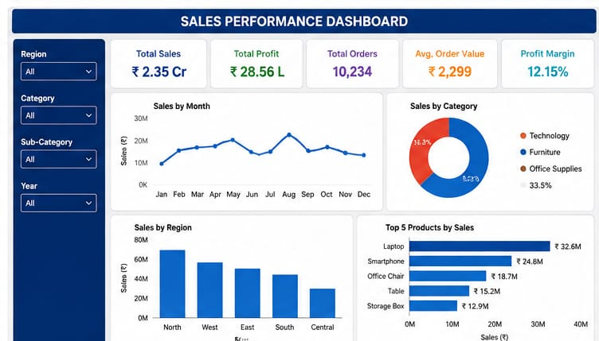
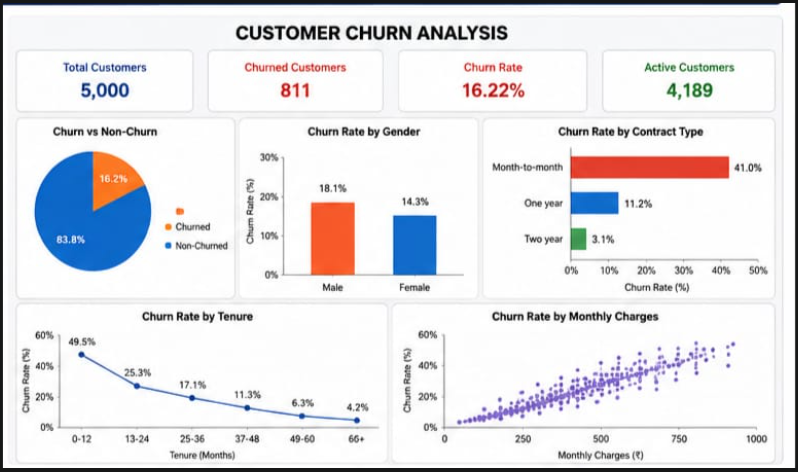
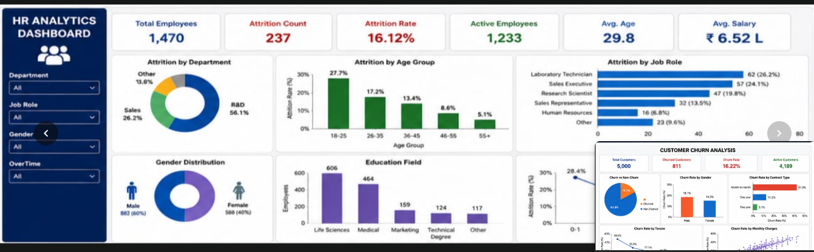

Data Analyst passionate about transforming raw data into meaningful insights using Python, SQL, Excel, and Power BI.
I am a Data Analyst with a strong interest in turning data into meaningful insights that support better decision-making. I have hands-on knowledge of SQL, Excel, Python, Power BI, and data visualization, and I enjoy working with data to identify trends, solve problems, and create impactful dashboards. I am continuously learning and improving my analytical and technical skills through projects and practical experience. I am eager to begin my career in data analytics, contribute to a collaborative team, and grow as a professional while helping organizations make data-driven decisions. I am open to entry-level Data Analyst opportunities, internships, and networking with professionals in the data analytics community My core technical skills include Python, SQL, Excel, Power BI, HTML,CSS, JavaScript, Git, and GitHub.
Technologies and tools I use.

Analyzed 10,000+ records using Excel and SQL to identify sales trends and customer behavior.
Built an interactive Power BI dashboard, improving report accessibility and reducing manual reporting effort.
Presented data-driven insights through charts and KPIs to support informed decision-making.

Cleaned and analyzed customer data containing 5,000+ records using Python and Pandas.
Performed exploratory data analysis (EDA) to identify key factors influencing customer churn.
Created visualizations and presented recommendations to improve customer retention..

Examined employee data to analyze attrition, department-wise performance, and workforce demographics.
Built an interactive HR dashboard displaying employee count, attrition rate, age distribution, and department-wise insights.
Delivered data-driven recommendations to support workforce planning and employee retention strategies.
Learning C, C++, DSA, Java, Python, SQL, Excel, and developing real-world software projects.
SQL, MySQL, Data Extraction, Data Cleaning, Data Analysis, JOIN, GROUP BY, HAVING, Aggregate Functions, Subqueries, Window Functions, Data Validation, Reporting, Query Optimization, Database Management.
Professional learning and certifications.
Programming fundamentals and application development.
Database design, queries, joins, and optimization.
Pivot Tables, Charts, Lookup Functions, and Dashboards.
Interactive dashboards and business intelligence reports.
Let's connect and build something amazing.
alammdasif3@gmail.com
linkedin.com/in/asifalam1502
github.com/asli1522
Bihar, India